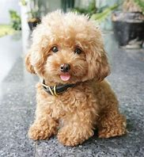

Existen controversias acerca del origen de la raza. Algunas teorías afirman que procede de África y que llegó a Francia durante las guerras revolucionarias; de allí se expandió hacia España, Reino Unido y Países Bajos. Actualmente, hay tres países que se adjudican como los lugares de origen de la raza: Alemania, Francia y Rusia.
Otra teoría es que procede de Alemania; el caniche es a su vez descendiente del Barbet francés. Originario de los pantanos alemanes en la Edad Media, fue destinado para la caza de aves nadadoras como el pato o el ganso, de modo que se seleccionó por características tales como su adaptabilidad al terreno cenagoso y su resistencia al agua, lo que hace que esta raza, junto con otras, sea llamada perro de agua.
Caniche mediano color negro.
A partir del siglo XVI, los caniches empezaron a ser famosos por su belleza e inteligencia, sobre todo en diversas presentaciones circenses y obras de arte de diversos autores como Alberto Durero y Francisco de Goya. En tiempos de Luis XVI de Francia ya era muy común su presencia en la corte francesa.
Por cambios en el gusto en cuanto a su apariencia, durante el siglo XIX se despreció la protección del pelaje que, hasta entonces, tenía la función de resguardarlo de la hipotermia, por lo que los estilistas empezaron a crear diversos cortes, como el británico montano y el continental. Para los caniches recién nacidos, se inició la costumbre de amputar la cola. Durante la Guerra franco-prusiana empezó la difusión de la raza como tal, destinada para los millonarios y aristócratas. Hasta el siglo XX predominaba la variedad gigante, pero posteriormente surgieron con aprobación de las asociaciones caninas —como el Kennel Club— las variedades estándar (de escasa difusión desde 1792), miniatura (1911) y toy (1957). Cuando se estableció el estándar en 1936, Alemania reconoció oficialmente el caniche como una raza originaria de Francia, poniendo esto como objetivo para evitar cualquier disensión entre los dos miembros fundadores de la FCI. La aparición del celo en la perra varía entre los siete y nueve meses de edad. En razas pequeñas, generalmente más precoces, se verá antes que en razas de gran tamaño. Sin embargo, en ninguna perra debe preocuparnos que no haya aparecido cuando cumple su primer año, ya que existen otros factores complejos, aparte de la edad, que influyen en ello. Si una hembra no ha tenido su primer celo, pasado un año y medio de vida debemos llevarla al veterinario para someterla a revisión.
La duración de un celo dura entre quince y veinte días e incluso veinticinco días. La perra sufre cambios de comportamiento, crecimiento y una hemorragia vaginal que varía mucho en cantidad según cada animal.
Caniche gigante variedad Cordelé, durante una exhibición canina organizada por el AKC.
El período de gestación dura aproximadamente entre sesenta y un días y sesenta y tres días. Lo conveniente es, que pasados los sesenta y tres días si la perra aún no ha parido, se le hagan controles veterinarios. Un caniche puede llegar a tener una cantidad de crías de cuatro a diez cachorros.
La mayoría de las razas de caniche sufren las siguientes enfermedades que pueden ser tratadas por veterinarios, o algunas de ellas solo pueden ser controladas; a continuación se describen las enfermedades que más repercusiones pueden tener: